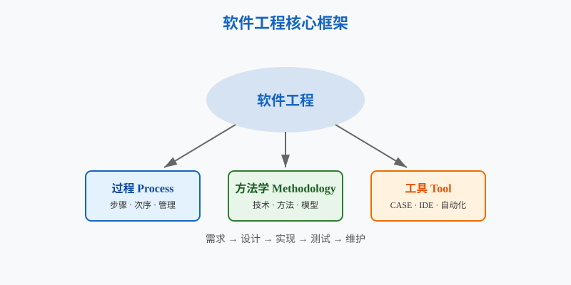
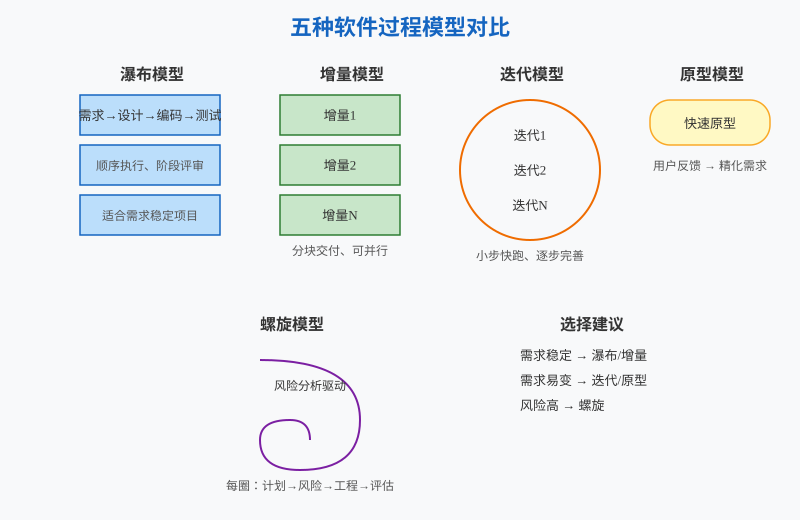
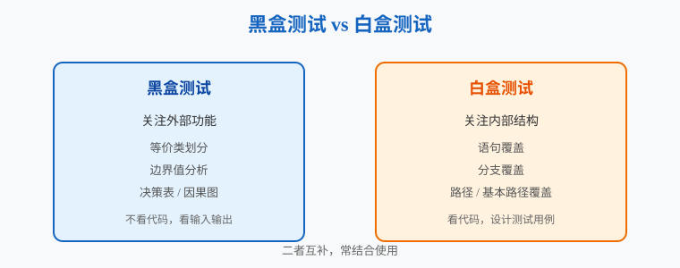
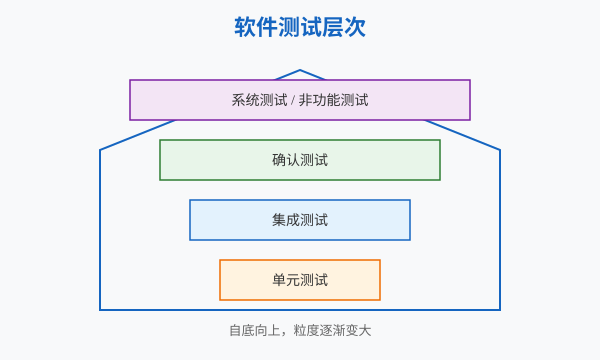
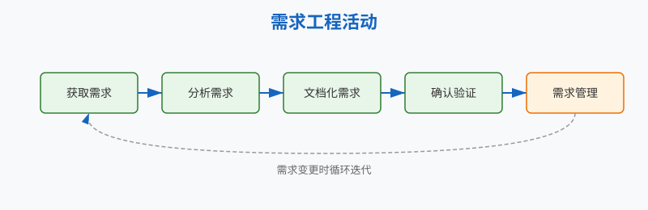
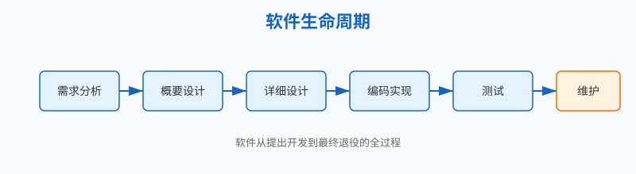

软件工程的本质是“把软件视为产品、把软件开发视为工程”，在成本与进度约束下交付足够好的软件。全书围绕“需求 → 设计 → 实现 → 测试 → 维护”这一主线展开，核心手段是抽象、建模、模块化、重用、信息隐藏、关注点分离、双向追踪、工具辅助。

| 模型 | 指导思想 | 关注点 | 适合软件 | 管理难度 |
|---|---|---|---|---|
| 瀑布模型 | 按阶段顺序推进 | 与软件生命周期一致，每阶段需评审 | 需求明确、变动小的项目 | 低 |
| 增量模型 | 分增量渐进交付 | 快速交付部分功能，可并行开发多个增量 | 需求较明确、可模块化的项目 | 中等 |
| 迭代模型 | 多次迭代完善 | 每次迭代是完整小周期，体现“小步快跑” | 需求不确定、持续变化的项目 | 中等 |
| 原型模型 | 以原型导出需求 | 通过原型与用户交流、持续确认需求 | 需求难以表述、获取困难的项目 | 较低 |
| 螺旋模型 | 风险驱动的迭代 | 集成迭代与原型，引入风险分析 | 风险高、需求变化大的大型项目 | 高 |
选择建议：需求稳定选瀑布/增量；需求模糊易变选迭代/原型；风险高选螺旋。

| 对比维度 | 黑盒测试 | 白盒测试 |
|---|---|---|
| 依据 | 软件外部功能与性能描述 | 程序内部结构与执行流程 |
| 是否需了解代码 | 不需要 | 需要 |
| 测试对象 | 功能、接口、输入输出 | 语句、分支、路径、条件 |
| 典型方法 | 等价类划分、边界值分析、决策表、因果图 | 语句覆盖、分支覆盖、路径覆盖、基本路径测试 |
| 优点 | 与实现无关，可提前设计；适合验证需求 | 能深入发现内部逻辑错误 |
| 典型应用阶段 | 集成测试、确认测试、系统测试 | 单元测试 |
| 关系 | 关注“做什么” | 关注“怎么做” |

| 测试阶段 | 测试对象 | 测试方法 | 主要依据 | 实施时机 |
|---|---|---|---|---|
| 单元测试 | 函数、过程、方法、类 | 白盒测试为主 | 详细设计文档 | 详细设计阶段制定计划，编码后执行 |
| 集成测试 | 模块之间的接口与交互 | 黑盒测试为主 | 概要设计文档 | 概要设计阶段制定计划 |
| 确认测试 | 软件功能与性能是否满足需求 | 黑盒测试 | 软件需求规格说明书 | 需求分析阶段制定计划 |
| 系统测试/非功能测试 | 整个系统及其运行环境 | 黑盒/性能/安全/强度测试等 | 需求规格说明与运行环境要求 | 集成完成后 |
| 回归测试 | 修改缺陷后的新版本 | 重运行已有用例 | 历史测试用例 | 缺陷修复后 |
补充： - 单元测试需要驱动程序和桩模块。 - 集成策略包括自顶向下和自底向上。 - 确认测试包括 α 测试（开发方内部模拟用户）和 β 测试（典型用户在实际环境使用）。

| 方法 | 核心思想 | 适用条件 | 用例设计原则 |
|---|---|---|---|
| 等价类划分 | 将输入集合划分为若干等价类，每类取一个代表值测试 | 输入域可分类 | 范围：有效类、大于最大值、小于最小值；值：有效、大于、小于；集合：在集合内/外；布尔量：真/假 |
| 边界值分析 | 软件易在边界处出错，重点选取边界及其邻近值 | 输入存在范围或边界 | 范围 $(a,b)$：取 $a,b$ 及紧邻左右的值；一组数：取最大、最小、次大、次小；数据结构有界时检查其边界 |
关系：边界值分析通常作为等价类划分的补充，二者常结合使用。
需求工程的一般性过程：
$$ \text{获取} \rightarrow \text{分析} \rightarrow \text{文档化} \rightarrow \text{确认和验证} $$
全程由软件需求管理（变更管理、追溯管理、配置管理）支撑。
需求获取方法：访谈、会议、问卷、现场观摩、业务资料分析、软件原型、头脑风暴、群体化方法、大模型生成等。
需求分析三视角：
| 视角 | 关注的问题 | UML 图 |
|---|---|---|
| 用例视角 | 具有哪些功能、功能间关系、与利益相关方关系 | 用例图 |
| 行为视角 | 用例如何通过对象交互来达成 | 顺序图、通信图、状态图 |
| 结构视角 | 业务领域概念及相互关系 | 类图 |

软件生命周期是指软件从提出开发、开发实现、运行维护到最终退役的全过程。以瀑布模型为例，典型阶段如下：
| 阶段 | 核心任务 | 主要产出 |
|---|---|---|
| 需求分析 | 定义功能需求与非功能需求 | 软件需求模型、需求规格说明书、确认测试计划 |
| 概要设计 | 建立软件总体架构 | 概要设计模型、概要设计文档、集成测试计划 |
| 详细设计 | 设计模块内部细节（算法、数据结构） | 详细设计模型、详细设计文档、单元测试计划 |
| 编码实现 | 编写程序代码并进行单元测试 | 经过单元测试的源程序代码 |
| 集成测试 | 组装模块，发现接口缺陷 | 集成测试报告 |
| 确认测试 | 从用户角度验证是否满足需求 | 确认测试报告 |

$$ \text{软件} = \text{程序} + \text{数据} + \text{文档} $$
$$ \text{软件开发} = \text{软件创作} + \text{软件生产} $$
$$ (\text{输入数据},\ \text{前置条件},\ \text{测试步骤},\ \text{预期输出}) $$
$$ V(G) = E - N + 2 $$
其中 $E$ 为流图边数，$N$ 为流图节点数；或简化为 $V(G) = P + 1$，$P$ 为判定节点数。
$$ M = P + K \cdot e^{(c-d)} $$
其中 $P$ 为生产性工作量，$K$ 为经验常数，$c$ 为复杂度，$d$ 为熟悉程度。
画数据流图并转化为软件结构图
画用例图与顺序图
include、扩展 extend、继承 inherit）。程序流程图 + 环形复杂度 + 路径覆盖
等价类划分 + 边界值分析
提示：本文档为考前速查，建议对照教材课件中的各类示意图进行手绘练习，确保能在考场上独立完成数据流图、结构图、用例图、顺序图和程序流程图的绘制。